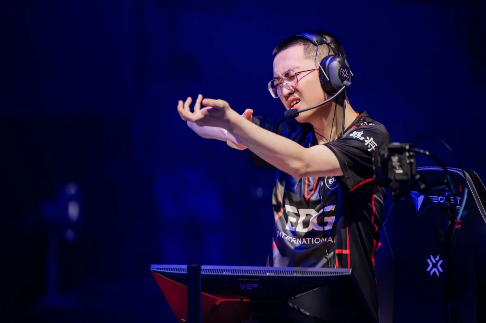
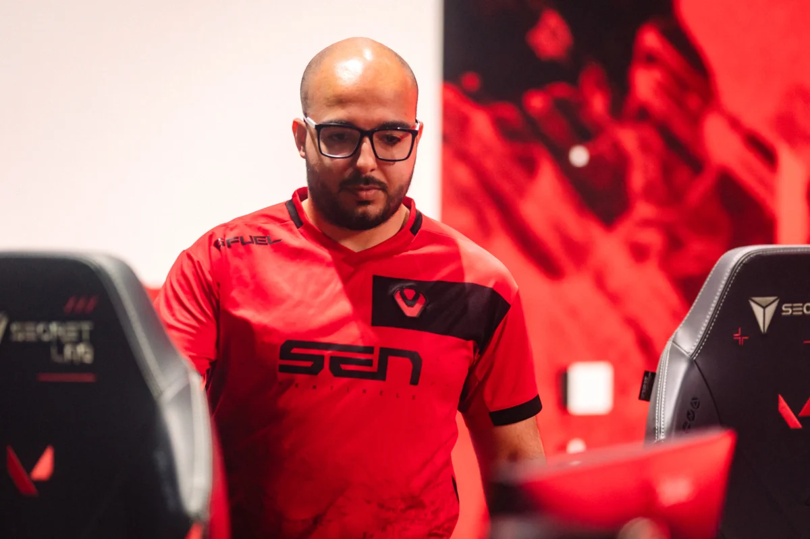
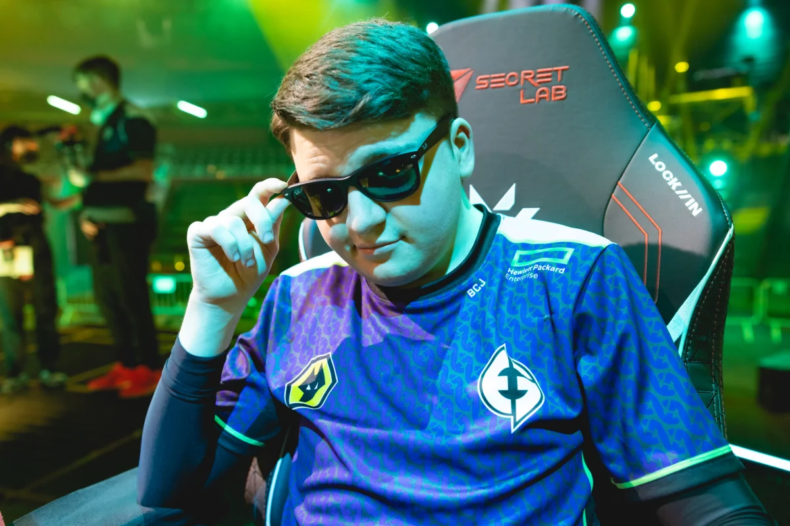
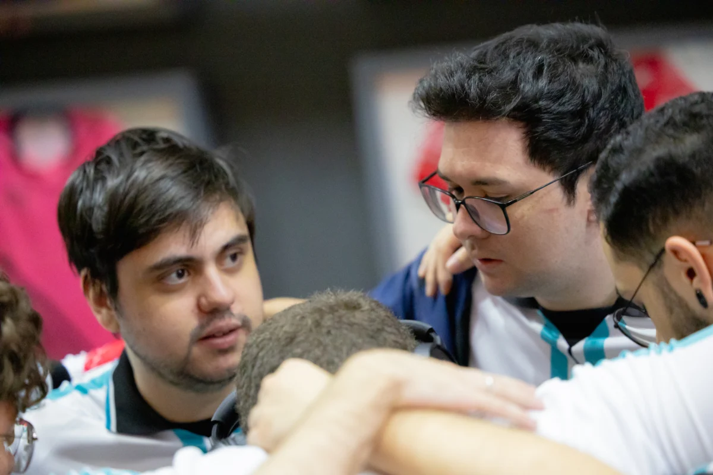
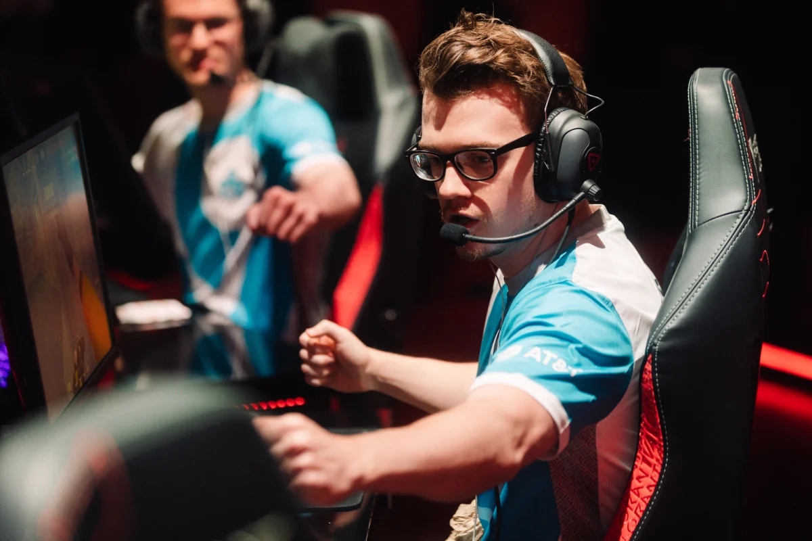
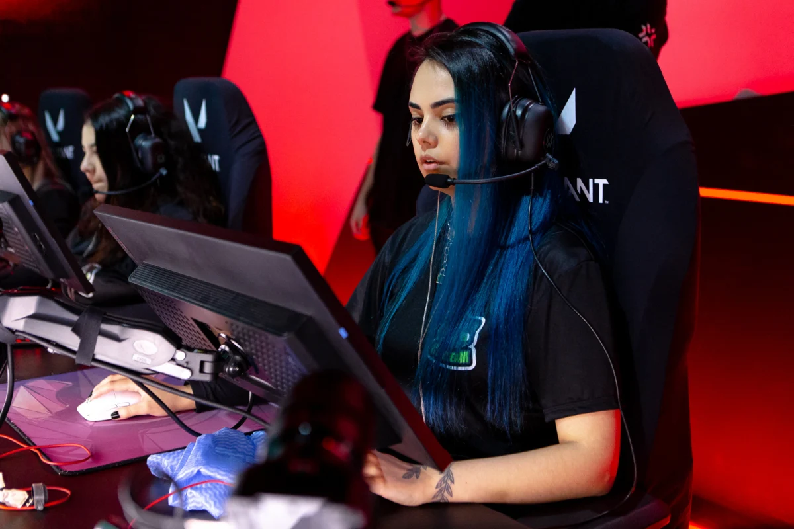

Noticias Insight
Site de Noticias
News
Insight
Noticias Insight
home
Mundo Dos Jogos
Politica

Estrela da EDward Gaming
ZmjjKK é destaque da revista VOGUE China

Sacy afirma que situação do Tier 2 está “espantando” jogadores
Jogador espera que a situação seja resolvida pela Riot Games o mais rápido possível

Evil Geniuses se despede de seu “Time B”
Segundo a organização, quinteto foi essencial na conquista do Champions

Liberty pretende transferir vaga no VCB para jogador e coach
Hiromi e tockers devem ficar com a vaga da Liberty no VCB 2024

Zellsis anuncia saída da Cloud9
Norte-americano estava na organização desde o fim de 2022

Cleiteam promove venda de camisas para ajudar com custos do Game Changers Brasil
Pedidos podem ser realizados pela caixa de mensagem das jogadora